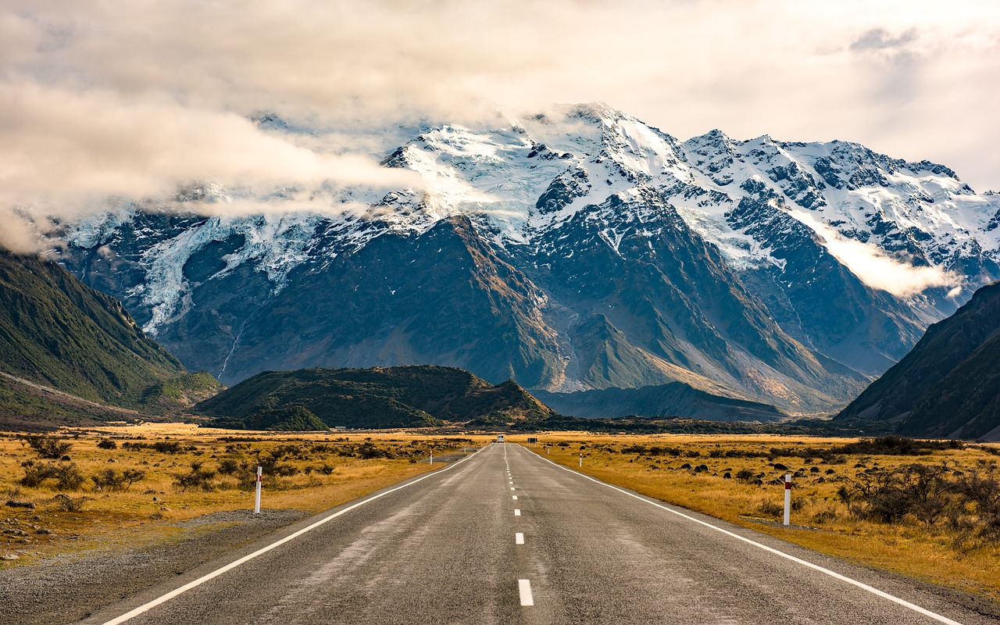

South Africa faces significant challenges in providing clean and safe drinking water to its population. The Department of Water and Sanitation is responsible for managing the country's water resources; however, it has faced criticism for issues such as fraud, corruption, and procurement irregularities, leading to difficulties in funding essential water infrastructure projects.
In recent years, several regions have experienced severe water crises. For instance, the Cape Town water crisis from 2015 to 2020 saw dam levels plummet, prompting fears of "Day Zero," when the city might run out of water. While the situation improved with increased rainfall, the crisis highlighted the vulnerability of South Africa's water supply.
More recently, Johannesburg has encountered unprecedented water supply cuts, lasting up to 86 hours. This crisis has been attributed to factors such as poor management, infrastructure failure, and corruption, posing serious threats to both the economy and daily life.
In response to these challenges, charity leaders from 22 nations have called on South Africa's G20 presidency to fulfill global water and sanitation promises. This appeal emphasizes the need for strengthened commitments to address water scarcity and improve sanitation infrastructure.
Organizations like Dondo Water are actively working to address these issues. In partnership with entities such as Kalahari Resorts & Conventions and charity: water, Dondo Water has pledged to bring clean, safe drinking water to one million people in Africa. Our approach focuses on transparency, ensuring that 100% of donations directly fund clean water projects.
These efforts are crucial in a country where water insecurity remains a pressing concern. Access to clean water is essential for health, education, and economic development, underscoring the importance of both governmental and non-governmental initiatives in addressing South Africa's water challenges.
